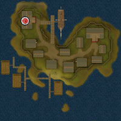
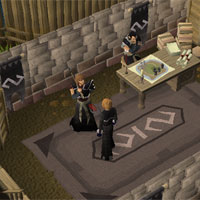
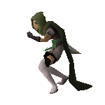
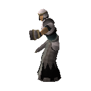
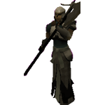
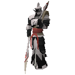

")
Conquest
Introduction | Location | Requirements | Starting a Conquest
Commanding your Squad | Organising your Squad | Rewards | Development Team
Commanding your Squad | Organising your Squad | Rewards | Development Team
Conquest is only accessible to RuneScape Members. Please subscribe to get this feature.
Please note this is a 'Safe' activity. If you die during this activity, you will keep your items.
Introduction

Location

Find the boat highlighted to the left, just south of the Lady Lumbridge, and speak with the Squire. She will ask if you want to go to the Void Knights' Outpost. If you say yes, you will sail the long journey to the outpost south of Ape Atoll. Once there, you will find yourself standing on the north dock of the outpost mapped below.

There are a few shops to explore here as well as a bank.
The archery store sells Ranged weapons such as javelins, as well as providing arrowheads up to rune.
The character in the smithy will fix broken tools and Barrows armour, similar to the services provided by other NPCs such as Bob in Lumbridge.
The Magic shop sells runes for a very fair price.
Requirements
Conquest has only one requirement. You must have a Combat Level of at least 40 if you want the Void Knights to put their faith in your ability. You'll be dealing with live troops, after all!
Recommended Items
You may take any items into the Conquest Training Facility, but they won't help you; you will be commanding troops, so it will be your squad's swords, bows and staves that you are relying on.
Starting a Conquest

When you are ready to begin a Conquest against other human commanders, climb down the stairs in the south of the Training Facility. This will take you into its basement, with the sparring ring to the east and two chambers to the north and south. The chamber to the north (denoted by a green barrier) offers auto-matching Conquests, where you can be automatically allocated a human opponent according to your Conquest rank. Your rank will increase according to your abilities as a Void Knight commander in Conquest. For the moment, if you wish to start a game with minimal fuss, then enter the auto-matching chamber and wait for the Conquest organisers to assign you a suitable opponent.

Once you have chosen the type of Conquest, your challenge will appear in your opponent's chatbox (unless your opponent is on your Ignore List, meaning that no challenge will be issued). They can click it - at which point you will both be able to choose the items that you are waging on the conflict, if you have chosen a Staked battle - and you will be able to choose the Turn Time for that given Conquest. By changing the Turn Time, you are increasing or decreasing the amount of time that both you and your opponent have to make all of your moves, attacks and commands for one turn. Conquest is a turn-based activity, so a 0:30 turn time is more suited to experienced players who want a quick game, while 2:00 turn times are advised for those who are new to the game, and want to research each move before they make it. Both players must then accept or decline the Conquest.
Once accepted, you will be randomly allocated the dark or light army, and the game will flip a coin to decide whether you are starting first. Command your troops to victory, recruit!
Commanding Your Squad

Aim:
The aim of Conquest is to wipe out all of your opponent's troops. Once the last troop dies (although, it should be noted that no-one dies in Conquest - this is training after all) you will be handed victory and the spoils will be yours. You will want to keep your troops alive, to prevent your opponent from sneaking a victory for themselves.
At any time during a Conquest, you may ask your opponent for a truce. This can be done by clicking on the Diplomacy side interface and selecting 'Offer Truce'. Your opponent can choose to accept the draw, or decline and the battle will continue. Any player may also check the 'Ignore opponent's truce offers' checkbox to decline all future offers. Either player may also resign and accept a loss, with the resulting reduction in ranking and loss of wagered items.
Should you log out, you have ten minutes to freely return to the Conquest. Log back in to RuneScape on the same world and you will be automatically placed in the Conquest you left. If you log out, your opponent will be offered the opportunity to 'Accept Victory' and win the match.
Getting to Know your Troops:
To understand your troops and their abilities, you need to be able to see them! Getting used to the camera and controlling its viewpoint will not take long, and will help you see as much or as little of the battlefield as you want. Use the arrow keys on your keyboard to rotate the view about a central point on your game screen, and move your mouse cursor to the sides of the game screen to make the camera pan in that direction.
To defeat your opponent, you will need a squad, and that squad is made up of troops. If this is your first time playing Conquest, you will find that you are given a default formation and squad, and this squad is made up of seven different troop types. Those troops are:
- Scout - Fast, lightly armoured troops, ideal for out-manoeuvring enemy formations
- Foot soldier - Well-rounded troops that form the backbone of your command force
- Archer - Has the longest range of your troops. Deploy them wisely as they can be overwhelmed in close combat.
- Mage - Sacrifices range for increased devastation. You'll need to protect it from incoming attacks.
- Halberdier - Highly effective when deployed correctly. Their long reach can halt an enemy advance before they close in on your troops
- Knight - Stoic and powerful. The knight can hold the line against hordes of lesser foes.
- Champion - Can decimate an opposing force single handedly. They are a sight to behold in the midst of battle.
Troop |
Movement |
Damage |
Health |
Range |
Cost |
|  Scout |
6 | 100 | 100 | 1 | 25 |
|  Foot soldier |
4 | 100 | 300 | 1 | 50 |
|  Halberdier |
4 | 200 | 200 | 2 | 75 |
![[image]](../../img/main/kbase/minigames/conquest/conquest_archer.gif) Archer |
3 | 100 | 100 | 6 | 100 |
![[image]](../../img/main/kbase/minigames/conquest/conquest_mage.gif) Mage |
4 | 200 | 100 | 4 | 100 |
![[image]](../../img/main/kbase/minigames/conquest/conquest_knight.gif) Knight |
4 | 300 | 300 | 1 | 100 |
|  Champion |
4 | 400 | 500 | 1 | 200 |
The attributes of your troops have the following effect in battle:
- Movement - This determines the number of squares that a troop can move in one turn. A troop may move in any direction, including diagonally.
- Damage - This displays the amount of damage that the troop does in combat. When the troop attacks, they will inflict an amount of damage, equal to their Damage attribute, to their opponent's Health.
- Health - This is your unit's life points, and it indicates how much damage your unit can take before it dies.
- Range - This shows the attack range of your troop. If an enemy troop is within this number of squares of your troop, you may attack them in your Attack phase.
- Cost - The better the unit, the greater its cost. When recruiting your forces, you will have 1000 resources with which you will construct your squad.
The Selection Phase:
The Selection Phase is the opening phase of any turn. The function of this phase is for you to choose the one troop that you will be moving and attacking with this turn. You are also able to use Commands in this phase.
In the Selection Phase, you should carefully choose your troop for that turn, as you will not be able to change your mind once you progress to the Movement Phase. This troop will be your one and only opportunity to turn the tide of battle.
Once you have made your decision, left-click on your troop of choice and click 'End Phase' on your Turn Details tab to signal the start of the Movement Phase. You may also skip the Movement Phase, should you not want to move your selected troop this turn, by left-clicking on the target opposing unit.
The Movement Phase:

Your selected troop will be highlighted by a yellow circle, and you will see a large blue area surrounding it. This blue area is your troop's movement range. To find your troop's Movement value, look at the Troop Details tab or right-click the troop and select 'Details'. You may move to any blue square on the board; you may not travel to any square that is outside of these blue squares.
Once you have made a decision about which blue square to move to, left click on it and your troop will move. The Movement Phase will end if you have used up all of your movement allocation for that turn. You can move multiple times with one troop until you use up your total movement allocation. You also do not have to use every single move for your troop: you can move a smaller number of squares, or not move any squares at all, should you wish: in these cases, click 'End Phase' on your Turn Details tab and you will move to your Combat Phase.
The Combat Phase:

An enemy unit must be within range of your troop for it to be attacked. Remember: your troop's Range attribute determines its attack range; for example, a troop with a range of 4 can attack a unit 4 squares away. If an enemy troop is within your attack range, a red square will appear beneath that enemy unit.
To attack a troop with a red square beneath it, simply left-click and attack it during your Combat Phase. Your troop will automatically stab, shoot, strike or fire at your opponent. The attacker will always strike first (unless the defender is under the effects of the Vigilance command) and the amount of damage they deal is equal to their Damage attribute, which can be found on the Troop Details tab, or by right-clicking a unit and selecting 'Details'.
If the amount of damage you deal is greater or equal to the amount of Health the opposing troop has, then the troop will 'die' and be removed from the sparring ring. If the unit remains alive after your attack (this will often happen when you try to tackle a Champion, for example) then the defending unit has the opportunity to retaliate. A troop may only retaliate if they are within attack range of the opponent troop; for example, if an archer attacks a champion from four squares away and the champion survives, the champion will not be able to retaliate as it only has an attack range of 1.
Once the attack and the retaliation has finished, the Combat Phase will end and the Rally Phase begins.
The Rally Phase:
The Rally Phase is your opportunity to assess the battlefield, gather your thoughts and prepare for your opponent's next turn. During this phase, you may use one of your Commands to surprise your opponent. Otherwise, all that is left is to end your turn and pass control over to your opponent. This can be done by clicking 'Turn Options' and selecting 'End Turn'.
Commands:

These commands are effects that you have on the battlefield, increasing the attributes of your troops, lessening the attributes of your opponent's troops, or generally affecting the actions of you or your opponent. You may use them at any time in your own turn but not in your opponent's, and each command comes with a cooldown period: a number of turns that you must wait before you can use the command again. The more powerful commands will require you to wait more than one turn before you can use them again, for example. You can see the current cooldown status of your commands in the Command Details tab.
There are nine commands available for any player to choose from when recruiting their squad, and there are four slots for different commands. Choose your commands wisely and think about how they can be used to complement each other: a Charge-affected Champion protected by a shield wall can be near-unbeatable, for example.
Each command has a cost. This cost not only determines the resources you will need if you want to recruit that command to your squad (more about this later) but it determines how many command points you will need to use it. Command points are gathered by defeating opponent troops (you will gain a number of command points that are equal to the cost of the opponent's troop) and a small number of command points are allocated to you at the end of each of your turns. Your stock of command points can be found on the Command tab on your side interface. You may also view a troop's details to find out how their attributes are currently affected by a command.
The different commands are listed below:
Command |
Effect |
Cooldown |
Cost |
| Battle Cry | A target troop you control gains +200 damage and +200 health until the start of your next turn | 5 turns | 75 |
| Stoicism | A target troop you control gains +400 health until the start of your next turn | 5 turns | 75 |
| Regenerate | A target troop you control has its health completely restored | 4 turns | 150 |
| Bombard | A target enemy troop's health is reduced by 100. You will not receive any command points for killing a troop in this manner | 2 turns | 200 |
| Winds of Fate | A command, at random, reaches the end of its cooldown period and is ready to use | 2 turns | 150 |
| Charge | A target troop you control has its movement attribute doubled for this turn | 5 turns | 75 |
| Chastise | A target enemy troop cannot move or attack during your opponent's next turn. This command cannot be used on the opponent's last troop. | 3 turns | 50 |
| Vigilance | A target troop you control strikes first when defending until the start of your next turn | 3 turns | 50 |
| Shield Wall | All damage dealt to target troop you control is reduced to 100 until the start of your next turn | 5 turns | 50 |
Organising your Squad
As any good commander will tell you, half of the battle takes place off the battlefield. This is no different with Conquest: you will need to choose your recruits carefully, and then organise them into a formation that will make the most of their positives. You will also need to select a number of commands that complement your strategy and units well.
To organise your troops, you will need to talk to Knight Dorian, on the ground level of the Conquest Training Facility. He has right-click options to change your recruits and your formation. You do not need to form a squad to complete the tutorial, but it is advised that you create a custom squad and formation for your first game against a human opponent.
Squad Selection:

When recruiting an army and choosing your commands, you must always be aware of your Squad Resources. Every squad, regardless of a commander's rank or achievements, will be constructed from this same finite pool of 1000 Squad Resources. You will need to spend these squad resources on troops and commands carefully, as your opponents will also have attempted to squeeze every last bit of quality from their 1000 Squad Resources. There is nothing to unlock in Conquest, so every commander will be working with the same troops and commands.
On the left-hand side of the interface is your current squad selection. These are the troops that you would find waiting for you in the sparring ring if you were to immediately begin a Conquest. You will start with a default selection of troops that encompasses every troop type; you will most likely want to change your squad to focus on certain strategies: perhaps you want a squad that focuses on range and keeping your Archers alive, or you want a squad that is loaded with Champions and Knights that are boosted with movement increases.
To remove a troop from your squad, select it in the left-hand side of the interface and choose 'No Troop' on the right-half of the interface. This will remove it and give you a space in your squad to recruit a different troop. It will also add the troop's value to the 'Squad Resources' value in the top-right of the interface. Should you wish to simply replace that troop, you may select a different troop type from the right-half of the interface. You can also compare two troops by selecting a replacement for your currently recruited troop; on the right-hand side of the interface you will be able to see where the replacement troops stats have improved attributes (coloured in green) and where they have worse attributes (coloured in red).
You have up to ten slots in total to fill with troops to command, and you can find the cost of each unit in the table found in the Getting to Know your Troops section, or on the right-hand side of the interface when you have a troop selected. It is advised that you leave yourself a decent number of Squad Resources for commands, as a squad without commands will almost always fail to garner a victory against a sensible opponent.
Commands:

As with the Select Troops tab, your current squad selections are shown on the left-hand side of the interface. To remove a command, left-click on it and click on 'No Command'. To replace the command with a different command, simply select the command you wish to add to your squad on the right-hand side of the interface. You may view information on your current command or the command you want to replace it with on this right-hand side of the interface. A table of the commands can be found here.
You may not have two versions of the same command in your squad.
Formation:

This interface gives you a visual representation of where your troops will be placed in the sparring ring. On the left-hand side of the interface is a list of troops that are not currently allocated a position on the battlefield. If you have any troops in this list, you should drag them onto the battlefield and place them onto a square of your choice. If you neglect to do so, you will not be able to start a conquest.
On the right-hand side of the interface is a representation of the sparring ring. You will notice that three rows of this grid are coloured blue. These are your starting squares, on your side of the sparring ring; you may place your troops on these squares, in any formation that you so choose. You may not place your troops on the black squares, as these are outside of your starting area and would give you an unfair advantage in battle!
Each troop is represented by its initial letter (K for knight, A for archer, etc) to give you an at-a-glance idea of how your troops are currently organised. Keep dragging and moving your troops to put them in a formation that you are happy with and then click 'Accept'. If you want to clear all your changes, click 'Reset', while the 'Default' button will select a simplistic formation for your currently chosen troops.
Rewards
When you have completed a game of Conquest, whether by winning, losing or signing a truce, you will receive a number of Commendations and a change in your Conquest ranking.
Your Conquest ranking is displayed on the Hiscores of the RuneScape website (as long as you have achieved a rank of 1250 or higher). You will start your Conquest training at rank 1000, and this will increase or decrease by playing games of Conquest. The amount you increase or decrease is dependent on who you are playing: if you are playing someone of a lower rank, you will gain fewer ranks if you beat them, and risk losing a greater number of ranks if you lose. If you play a higher ranked player, you will lose fewer ranks if you lose, and gain a far greater number of ranks if you win. Additionally, if you have a high rank and draw against a lower levelled player, it is likely that you will lose a small number of ranks.
Commendations are the same as those used in Pest Control, so can be combined with them and spent on the same rewards. The number of Commendations you win is dependent on a range of factors, including your performance, the result and how long you played the game for. The rewards can be viewed by right-clicking on Captain Ethar and selecting 'Rewards', or you can right-click any Void Knight about the Outpost.
You can have a maximum of 500 Commendations. The Void Knights will only offer training in skills that you have at level 25 or above. Please note: Those who trade in 100 Commendations at a time will notice the Knights grant an extra 10% on top of the experience you buy! If you trade in 10 Commendations at a time you will receive a 1% bonus on any experience you buy.
You may purchase the following rewards:
Void Knight Mace
This unique mace not only serves as a strong melee weapon but adds 10% to any magic damage you cause while wielding it. You must have at least level 42 in Attack, Strength, Defence, Constitution, Ranged and Magic, as well as having 22 Prayer or more to buy this item from the Knights.
| Item | |||||||||||||||||||
| Attack Bonuses | Defence Bonuses | Other | |||||||||||||||||
![[Image: Stab]](../../img/main/kbase/table_text/stab1.gif "Stab") |
![[Image: Slash]](../../img/main/kbase/table_text/slash1.gif "Slash") |
![[Image: Crush]](../../img/main/kbase/table_text/crush1.gif "Crush") |
![[Image: Magic]](../../img/main/kbase/table_text/magic1.gif "Magic") |
![[Image: Range]](../../img/main/kbase/table_text/range1.gif "Range") |
|
|
|
|
|
![[Image: Summoning]](../../img/main/kbase/table_text/summoning1.gif "Summoning") |
![[Image: Strength]](../../img/main/kbase/table_text/strength1.gif "strength") |
![[Image: Prayer]](../../img/main/kbase/table_text/prayer1.gif "Prayer") |
|||||||
![[image]](../../img/main/kbase/minigames/pest_control/mace.gif) Void Knight mace* |
+ 22 | + 0 | + 41 | + 8 | + 0 | + 2 | + 2 | + 2 | + 2 | + 2 | + 0 | + 38 | + 6 | ||||||
* Adds 10% to any magic damage you cause while wielding the mace.
Void Knight Armour
You must have at least level 42 in Attack, Strength, Defence, Constitution, Ranged and Magic, as well as having 22 Prayer or more to buy these items from the Knights. If you wear a complete set of Void Knight armour (you need the Void Knight helm and any three of the four pieces of Void Knight armour to complete a set. The mace does not count as armour), you will receive a bonus 'set effect' depending on the helm you have chosen to wear.
- Void melee helm: +10% to Attack and damage
- Void mage helm: +30% to Magic attack
- Void ranger helm: +10% to Attack and damage
| Item | |||||||||||||||||||
| Attack Bonuses | Defence Bonuses | Other | |||||||||||||||||
|
|
|
|
|
|
|
|
|
|
|
|
|
|||||||
![[image]](../../img/main/kbase/minigames/pest_control/body.gif) Void Knight top* |
+ 0 | + 0 | + 0 | + 0 | + 0 | + 45 | + 45 | + 45 | + 45 | + 45 | + 45 | + 0 | + 0 | ||||||
![[image]](../../img/main/kbase/minigames/pest_control/skirt.gif) Void Knight robe* |
+ 0 | + 0 | + 0 | + 0 | + 0 | + 30 | + 30 | + 30 | + 30 | + 30 | + 15 | + 0 | + 0 | ||||||
![[image]](../../img/main/kbase/minigames/pest_control/gloves.gif) Void Knight gloves |
+ 0 | + 0 | + 0 | + 0 | + 0 | + 6 | + 6 | + 6 | + 4 | + 6 | + 6 | + 0 | + 0 | ||||||
![[image]](../../img/main/kbase/minigames/pest_control/melee_helm.gif) Void melee helm |
+ 0 | + 0 | + 0 | + 0 | + 0 | + 6 | + 6 | + 6 | + 6 | + 6 | + 6 | + 0 | + 0 | ||||||
![[image]](../../img/main/kbase/minigames/pest_control/mage_helm.gif) Void mage helm |
+ 0 | + 0 | + 0 | + 0 | + 0 | + 6 | + 6 | + 6 | + 6 | + 6 | + 6 | + 0 | + 0 | ||||||
![[image]](../../img/main/kbase/minigames/pest_control/ranger_helm.gif) Void ranger helm |
+ 0 | + 0 | + 0 | + 0 | + 0 | + 6 | + 6 | + 6 | + 6 | + 6 | + 6 | + 0 | + 0 | ||||||
![[image]](../../img/main/kbase/minigames/pest_control/deflector.gif) Void Knight deflector~ |
+ 0 | + 0 | + 0 | + 0 | + 0 | + 30 | + 30 | + 30 | + 10 | + 30 | + 30 | + 0 | + 0 | ||||||
* If you lose the elite Void Knight top reward from The Void Stares Back quest, you can trade in this normal Void Knight top to replace the lost item. After that quest, you are also able to upgrade Void Knight robes to elite Void Knight robes.
~ The Void Knight deflector can only be obtained by those with a rank of at least 1250 in the Void Knight Conquest activity.
Void Knight Seals
The seals that mark a Void Knight are potent weapons against the chaotic disorder of the beasts that come through the portals. To unleash the power of the seal, right-click on it and select 'Rub' (or use the 'Operate' option if you are wearing it). The seal will inflict damage on nearby pests. Note that the seal has eight charges.
| Item | |||||||||||||||||||
| Attack Bonuses | Defence Bonuses | Other | |||||||||||||||||
|
|
|
|
|
|
|
|
|
|
|
|
|
|||||||
![[image]](../../img/main/kbase/minigames/pest_control/void_seal.gif) Void Knight seal |
+ 0 | + 0 | + 0 | + 0 | + 0 | + 1 | + 1 | + 1 | + 1 | + 1 | + 0 | + 0 | + 0 | ||||||
Development Team
Developers: Chris E
Graphics: Alex R, Mike W, Gurpreet K, Wing F, Giuseppe G, Ruth V and Rakesh M
QA: Vicki M, Ian H and Liam H
Audio: Adam R

|
More articles in Activities
|
|
|
Further Help
If this article does not help you, you may find the following sections of the RuneScape site helpful:
|
|